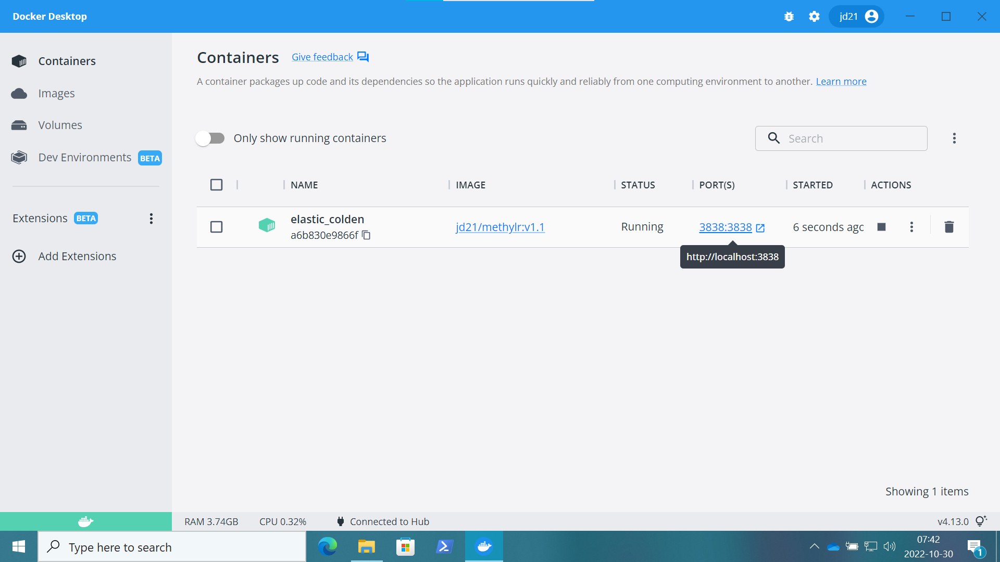

Use of Docker Container
On Windows
- Please make sure you have installed latest version of Docker Desktop on your Windows machine.
- Using ‘command-prompt’ or ‘Powershell’, run the command
docker pull jd21/methylr:latest. - Open Docker Desktop, under the tab ‘images’, on the LOCAL images, the docker image will be available as shown in the following figure

- Now, click on the RUN, it will open the ‘Optional settings’. Under the ‘Optional settings’, select the ‘Port (Host port)’ and write 3838 and click ‘RUN’.

- Click on the Containers on the side tab and then click PORT(S) ‘3838:3838’. The default web-browser will open and in a few minutes will start the app (It will take approximately 1-3 minutes to view the app).
NOTE: You can copy https://localhost:3838 after running the container and open it on other web-browser to run the app. 
On MacOS
- Please make sure you have installed latest version of Docker Desktop on your MacOS.
- Run the command,
docker pull jd21/methylr:lateston Mac terminal. - If you are using the Docker Desktop to use methylR, please follow the instructions from 3 to 5 as mentioned above for Windows.
- Alternatively, if you want to use the MacOS terminal to run the app, please use this command
docker run --rm -p 3838:3838 jd21/methylr:latestdirectly and after pulling all the images by docker, terminal will display
[2022-10-30T07:57:41.311] [INFO] shiny-server - Shiny Server v1.5.18.979 (Node.js v12.22.6)
[2022-10-30T07:57:41.312] [INFO] shiny-server - Using config file "/etc/shiny-server/shiny-server.conf"
[2022-10-30T07:57:41.342] [WARN] shiny-server - Running as root unnecessarily is a security risk! You could be running more securely as non-root.
[2022-10-30T07:57:41.345] [INFO] shiny-server - Starting listener on http://[::]:3838- Now, open the web-browser and run
https://localhost:3838will load the app within 1-3 minutes.
On Linux (Ubuntu 20.04LTS)
- If you want to use the linux terminal to run methylR, use the following command on the terminal
docker run --rm -p 3838:3838 jd21/methylr:latest- If you want to use the Docker Desktop for Linux, first pull the docker container using
docker pull jd21/methylr:latestfrom terminal and then follow Step 3-5 as mentioned above for Windows.
NOTE: Please contact the IT support if Docker is running properly. You can also contact the developers using the GitHub or the Google groups or directly email the developer.